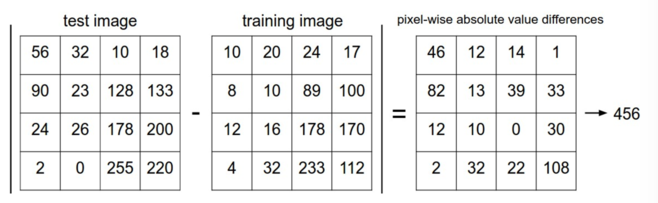
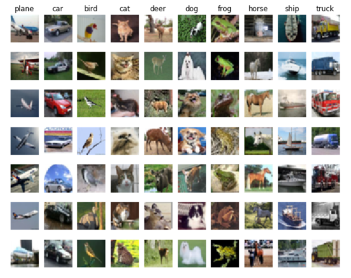
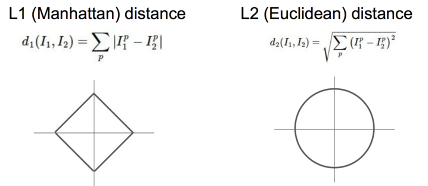
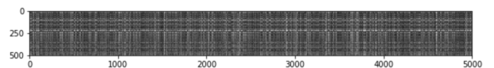
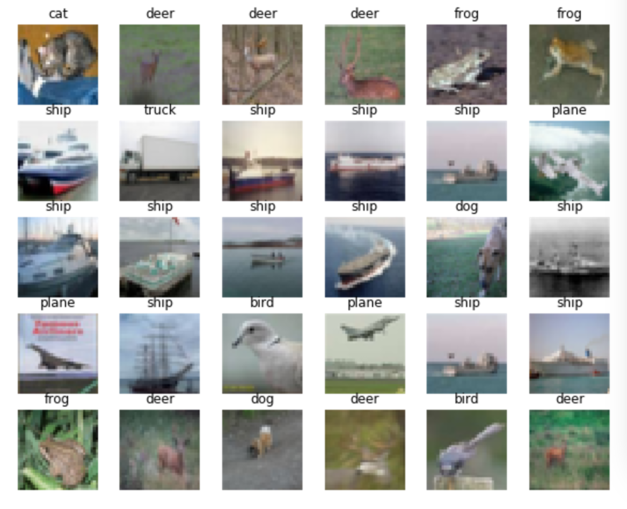
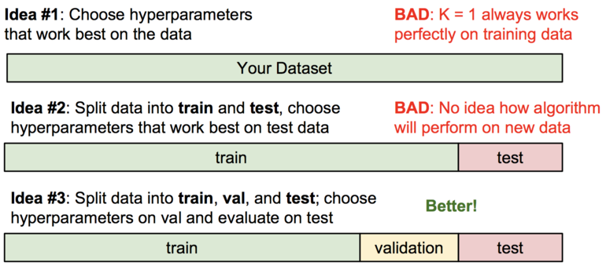
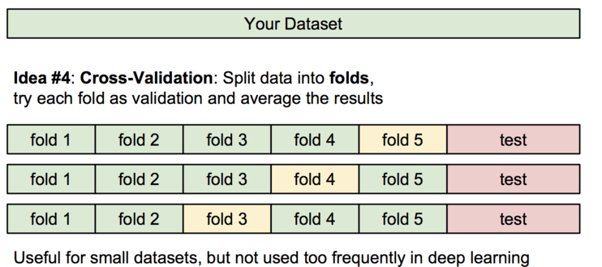
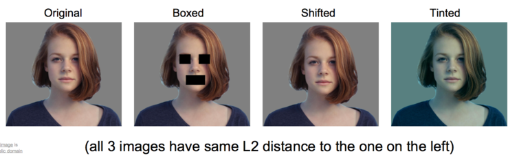

图像分类之 KNN
图像分类就是通过输入一个图片然后预测一个对应的标签。 图像通过 3 维表示，L * W * 3。分别表示长宽，其中的 3 表示 RGB 中 3 基色。 这种问题不是很容易解决，其中面临很多的挑战。
- 不同视角下的影响
- 体型或大小的不同
- 各种的变形。例如，猫的例子。
- 物体的一部分可见，其他被遮挡
- 光线的影响
- 背景的影响
- 一个大的物体又会有几个小的分类组成
这个问题，如果我们通过传统的方式，很难找到一个非常完美的方式去实现。其中，一个可能的做法是去识别物体的边界，然后去判断，但是如果换了一个物体又得重新做。 现在有一个比较好的方式。
数据驱动
这个过程的步骤如下：
- 收集图片及其标签的数据集
- 使用机器学习去训练分类器
- 计算新图像的分类
最邻近分类器
这个方式在现实中很少使用，但是它能给我们一个实现的方式去分类图片。 我们将两个图片表示为 \(I_1, I_2\) 两个向量。一个比较合适的方式是计算他们的 L1 距离 。
L1 距离，又叫做曼哈顿距离。
\begin{align} d_1 (I_1, I_2) = \sum_{p} \left| I^p_1 - I^p_2 \right| \end{align}例如。

下面我们需要看下 python 代码。下载 下载这个压缩包后，对应的 knn.ipynb 就是这个部分的代码指导。
# 这个和数据中的标签名对应
classes = ['plane', 'car', 'bird', 'cat', 'deer', 'dog', 'frog', 'horse', 'ship', 'truck']
num_classes = len(classes)
samples_per_class = 7
for y, cls in enumerate(classes):
idxs = np.flatnonzero(y_train == y)
# 每个分类随机选出 7 个图片
idxs = np.random.choice(idxs, samples_per_class, replace=False)
for i, idx in enumerate(idxs):
plt_idx = i * num_classes + y + 1
# 设置图片位置
plt.subplot(samples_per_class, num_classes, plt_idx)
plt.imshow(X_train[idx].astype('uint8'))
# plt.imshow(np.uint8(X_train[idx])) 也可以
# 目的都是一样的如果不把数据转化为 uint8，显示时可能会有奇怪的结果。
plt.axis('off')
if i == 0:
# 设置每一个分类的 title
plt.title(cls)
plt.show()
下面是运行的结果。

为了加快训练，做些简化。只选取 5000 个训练集，以及 500 个测试集。
# Subsample the data for more efficient code execution in this exercise
num_training = 5000
mask = list(range(num_training))
print(mask[1])
X_train = X_train[mask]
y_train = y_train[mask]
num_test = 500
mask = list(range(num_test))
X_test = X_test[mask]
y_test = y_test[mask]
为了计算上面公式定义的距离，我们先把数据转化为 2 维的。
X_train = np.reshape(X_train, (X_train.shape[0], -1))
X_test = np.reshape(X_test, (X_test.shape[0], -1))
print(X_train.shape, X_test.shape)
# 结果：(5000, 3072) (500, 3072)
其中 3072 = 32 * 32 * 3 的结果。
KNN 算法
KNN 叫做 K Nearest Neighbor。 这里有两个过程。
- 计算所有测试和训练数据的距离
- 通过上面的数据，找到 k 个距离最近的训练样本，然后对测试数据标签进行投票，最多的标签个数就是测试样例的标签。
from cs231n.classifiers import KNearestNeighbor
# Create a kNN classifier instance.
# Remember that training a kNN classifier is a noop:
# the Classifier simply remembers the data and does no further processing
classifier = KNearestNeighbor()
classifier.train(X_train, y_train)
dists = classifier.compute_distances_two_loops(X_test)
我们要注意到 L1 和 L2 的不同。

这个距离是通过 L2-distance (euclidean distance )，也即是欧几里得距离算出来的。
\begin{align} d_2 (I_1, I_2) = \sqrt{\sum_{p} \left( I^p_1 - I^p_2 \right)^2} \end{align}dists[i][j] = np.sqrt(
np.sum(np.square(X[i, :] - self.X_train[j, :])))
我们可以把这个距离用图像表示出来。
plt.imshow(dists, interpolation='none')
plt.show()
结果如下。
 其中黑色表示距离近，比较亮的部分距离比较远。
下面我们将上面得到的数据处理一下。下图中每一行中的第一列为测试样本，后面的通过上面算法的到的训练样本（k=5 个）。

我们很容易的看出，第 2，3 个测试样本可以成功的识别出来。
相应的代码如下。
k = 5
y_test_pred, pred_k = classifier.predict_labels(dists, k=5)
classes = ['plane', 'car', 'bird', 'cat', 'deer', 'dog', 'frog', 'horse', 'ship', 'truck']
samples = pred_k[:k]
for i, x in enumerate(samples):
if i >= k:
break
plt_idx = i * k + i + 1
plt.subplot(k, k+1, plt_idi)
plt.imshow(X_test[i].astype('uint8'))
plt.axis('off')
plt.title(classes[y_test[i]])
for j, y in enumerate(samples[i], start=1):
plt_idj = plt_idx + j
plt.subplot(5, k+1, plt_idj)
plt.imshow(X_train[int(y)].astype('uint8'))
plt.axis('off')
plt.title(classes[y_train[y]])
plt.show()
预测
我们找到最近的 k 个样例的 label，然后取个数最多的一个。
for i in xrange(num_test):
# A list of length k storing the labels of the k nearest neighbors to
# the ith test point.
closest_y = []
# 排序
idx = np.argsort(dists[i, :], axis=0)
# 取前 k 个最小的数据
closest_y = self.y_train[idx[:k]]
# 找到个数出现最多的标签
y_pred[i] = np.argmax(np.bincount(closest_y))
最后我们可以得到预测的成功率，不同的 k 值影响还是很大的。k=10 是一个比较好的数值。
y_test_pred = classifier.predict_labels(dists, k=10)
# Compute and print the fraction of correctly predicted examples
num_correct = np.sum(y_test_pred == y_test)
accuracy = float(num_correct) / num_test
print('Got %d / %d correct => accuracy: %f' % (num_correct, num_test, accuracy))
当 k = 1 时结果是，137/500 = 0.274 当 k = 10 时结果是，141/500 = 0.282 当 k = 30 时结果是，127/500 = 0.254
我们发现，准确率并不是与 k 正相关的，二是它在某个点有个极值。
其他的距离函数
在 KNN 代码中，只使用一个循环。
for i in xrange(num_test):
# broadcasting
dists[i, :] = np.sqrt(
np.sum(np.square(self.X_train - X[i, :])), axis=1)
如果一个循环都不使用。需要结合矩阵乘法以及 broadcast sums 来做。
这三种方式结果是相同的，但是所用时间不同。
def time_function(f, *args):
"""
Call a function f with args and return the time (in seconds) that it took to execute.
"""
import time
tic = time.time()
f(*args)
toc = time.time()
return toc - tic
two_loop_time = time_function(classifier.compute_distances_two_loops, X_test)
print('Two loop version took %f seconds' % two_loop_time)
one_loop_time = time_function(classifier.compute_distances_one_loop, X_test)
print('One loop version took %f seconds' % one_loop_time)
no_loop_time = time_function(classifier.compute_distances_no_loops, X_test)
print('No loop version took %f seconds' % no_loop_time)
其中不使用循环消耗的时间最少。
验证集
上面说到了 KNN 算法，但是我们应该有个疑问：我该如何选择 K 的值？ 上面提到了很多的距离函数，例如 L1,L2 以及不同的 k 值，这些所有的选择被称为 hyperparameters。
或许你会说，我们应该去试很多不同的值，然后看看那个值更好一些。这是一个很好的想法，现实中我们确实也会这么做，但是你必须要小心处理才行。 特别是我们不能使用测试集来调整我们的 hyperparameters。我们的测试集只是在最后阶段使用一次用来验证我们的分类器。 不使用测试集去调整 hyperparameters 的原因是，防止它很好的拟合了测试集，而在现实使用中效果却不一定好。
我们现在有一个比较好的做法是把训练集分成两个部分：一部分用于训练；另一个很小的部分作为验证集。
assume we have Xtr_rows, Ytr, Xte_rows, Yte as before
# recall Xtr_rows is 50,000 x 3072 matrix
Xval_rows = Xtr_rows[:1000, :] # take first 1000 for validation
Yval = Ytr[:1000]
Xtr_rows = Xtr_rows[1000:, :] # keep last 49,000 for train
Ytr = Ytr[1000:]
# find hyperparameters that work best on the validation set
validation_accuracies = []
# 选择几个 k 值验证
for k in [1, 3, 5, 10, 20, 50, 100]:
# use a particular value of k and evaluation on validation data
nn = NearestNeighbor()
nn.train(Xtr_rows, Ytr)
# here we assume a modified NearestNeighbor class that can take a k as input
Yval_predict = nn.predict(Xval_rows, k = k)
acc = np.mean(Yval_predict == Yval)
print 'accuracy: %f' % (acc,)
# keep track of what works on the validation set
validation_accuracies.append((k, acc))
总的来说是这样的。
Split your training set into training set and a validation set. Use validation set to tune all hyperparameters. At the end run a single time on the test set and report performance.

这里还有一个叫做交叉验证（Cross-validation）的概念。这种方法主要在训练集比较小的时候使用。

我们将训练集分成几份，例如上图中 5 份。然后我们选取绿色的部分作为训练集，黄色的作为验证集(validation set)。 这里的验证集的规模不一定是 1 个 fold。
事实上，KNN 在图像处理上从来不会使用。
- 测试时间很慢
- 距离度量对于像素来说有效。例如下图，其他三个与第一个都有相同的 L2 距离。

总结
基本上通过上面的过程，我们已经理解了 KNN 的原理和算法实现。在学习的过程中，我们发现 KNN 的识别效率很差，最高才 28%左右。